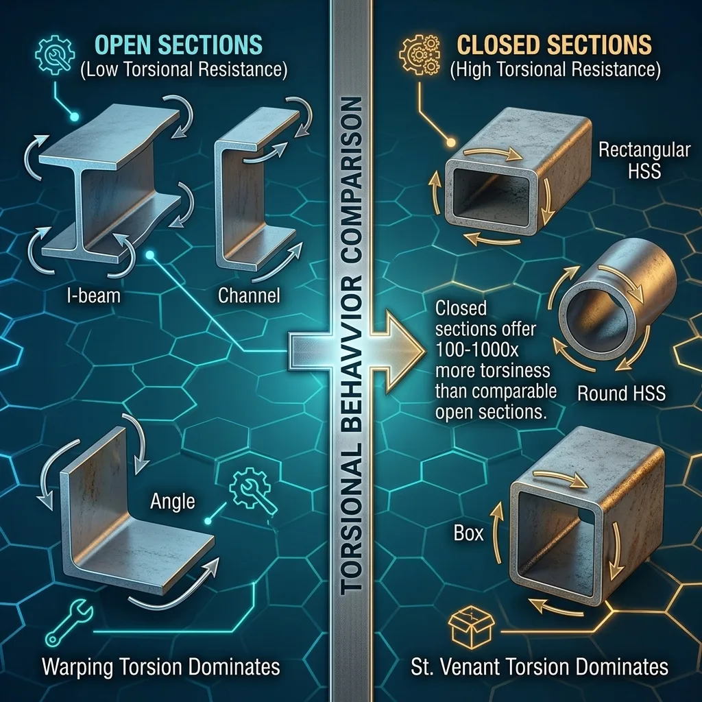
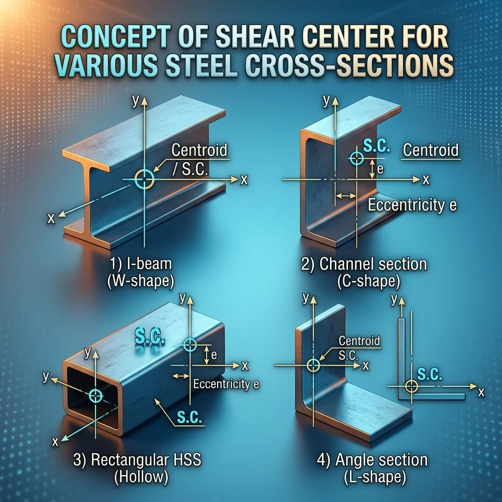
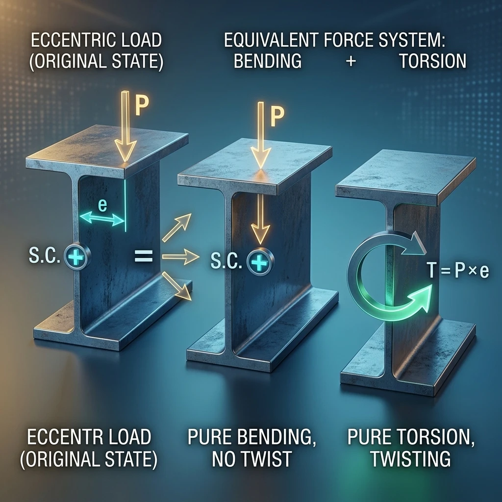
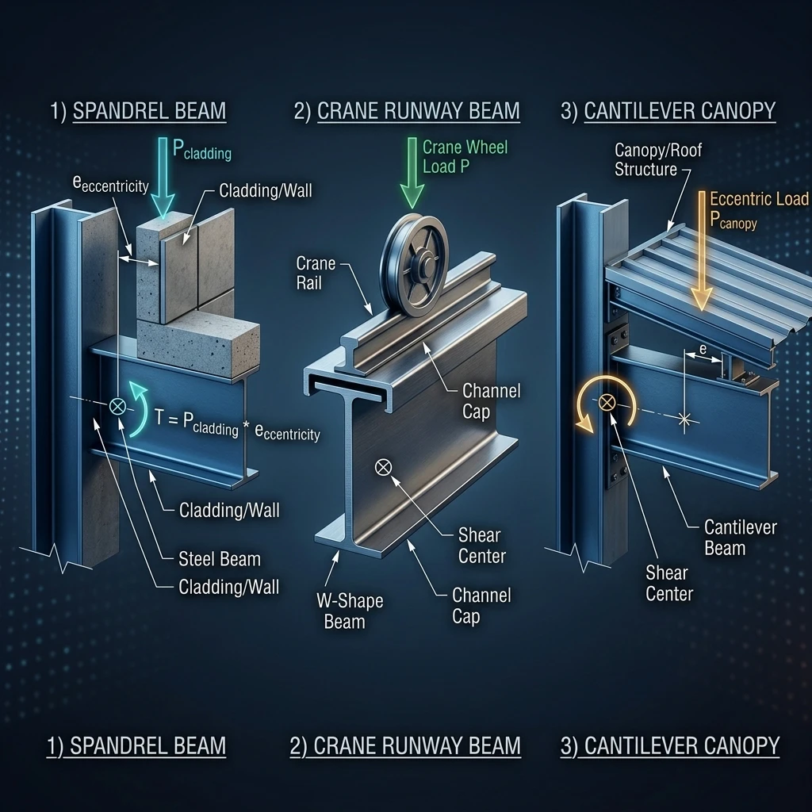
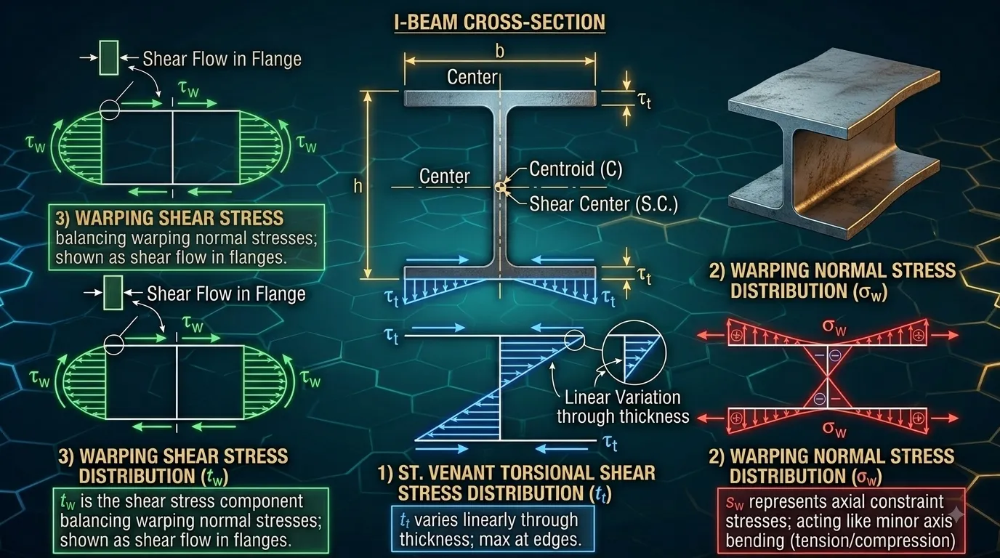
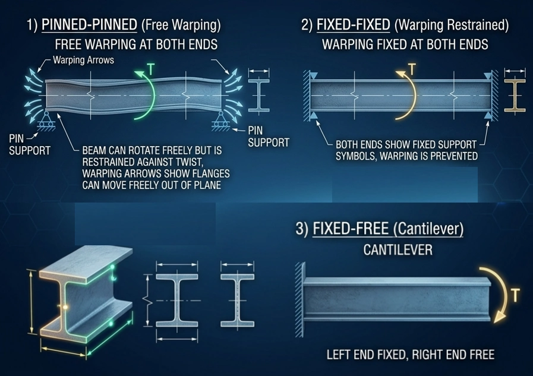
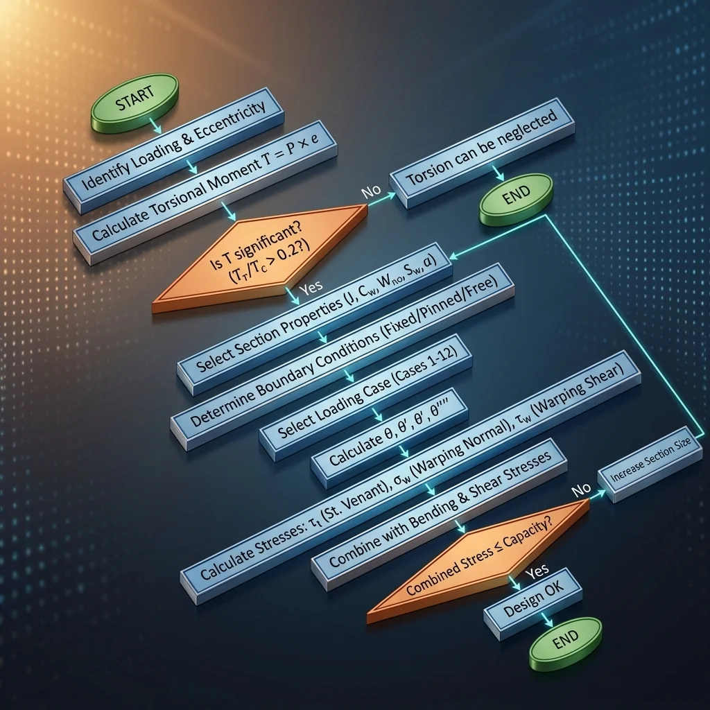

1. Why torsion is the check everyone avoids
In steel design, the torsion check has long been a grey area most engineers avoid. There are three concrete reasons.
Common analysis software does not support it
- SAP2000, ETABS and STAAD.Pro model members as beam elements with 6 degrees of freedom per node.
- The 7th degree of freedom — warping — is ignored entirely.
- Consequence: the software returns only the total torque T, and never the detailed torsional stresses.
The engineer must calculate by hand
- The process is involved, requiring several tables and charts.
- The formulas use the 1st, 2nd and 3rd derivatives of the twist angle — hard to approach in practice.
- No step-by-step guide exists that truly serves the practising engineer.
This article systematises torsion theory, gives a step-by-step design procedure, covers both AISC (Design Guide 9) and Eurocode 3 (SCI P385), and includes fully worked examples in Part 2.
2. Section classification — the most critical premise
This classification determines the entire analysis approach. Get it wrong and everything downstream is wrong.

Open sections
- Examples: W-shapes (I-beams), Channels (C/MC), Angles (L), Tees (WT/MT/ST).
- Torsional stiffness is very low — small torsional constant J.
- When twisted the section warps: planar elements displace out of their original plane.
- Warping torsion dominates, generating large normal stresses at the flange tips.
Closed sections
- Examples: rectangular HSS, round HSS (pipe), box sections.
- Torsional stiffness is very high — 100 to 1,000 times that of a comparable open section.
- A closed shear flow runs around the perimeter; St. Venant torsion dominates completely.
- Warping torsion is generally negligible.
| Property | Open sections | Closed sections |
|---|---|---|
| Torsional constant J | Small | Very large (100–1,000×) |
| Warping constant Cw | Large, significant | Small, usually neglected |
| Primary mechanism | Warping torsion | St. Venant |
| Normal stress from torsion | Present, often large | Very small, neglected |
| Computational complexity | High | Low |
| Under high torsion | Limit use | Preferred |
3. The shear center — the core concept
The shear center is the point through which a transverse load must act to cause bending without twisting. A load offset from it induces a torque T = P × e, where e is the eccentricity.

| Section type | Shear center location |
|---|---|
| W-shape — doubly symmetric | Coincides with the centroid |
| Channel — singly symmetric | Outside the web, on the flange side, at distance e₀ |
| HSS rectangular / round | Coincides with the centroid |
| Angle (L) | At the corner where the legs meet |
| Tee (WT/MT/ST) | On the axis of symmetry, near the flange–web junction |
Shear center formula for Channels
e₀ = 3·b_f²·t_f / ( h·t_w + 6·b_f·t_f )
b_f = flange width t_f = flange thickness
h = clear web depth t_w = web thickness4. Decomposing an eccentric load
When a load misses the shear center, decompose it into two independent components and superpose.

Concentrated torque: T = P × e
Distributed torque: t = w × e (per unit length)
P = concentrated load (kN) w = distributed load (kN/m)
e = eccentricity to the shear centerFour scenarios you will actually meet

- Spandrel beam: wall and cladding loads applied eccentrically on the flange.
- Crane runway beam: wheel loads on the rail offset from the shear center. The usual fix is a channel cap welded to the top flange.
- Cantilever with eccentric load: the worst case — the free end has no restraint at all.
- Asymmetrically loaded beam: slab on one side only, or eccentric secondary-beam connections.
5. The two torsional resistance mechanisms
The applied torque is resisted by two mechanisms that are physically quite different.
T = T_sv + T_w
T_sv = pure (St. Venant) torsion T_w = warping torsion5.1. Pure torsion — St. Venant
- The section rotates about its longitudinal axis while staying planar.
- Resisted by shear stress varying linearly through the wall thickness.
- Peak stress in the thickest element, directed parallel to its edge.
- Dominates in closed sections. In open sections J is small, so this is usually not the governing component.
T_sv = G·J·θ'
τ_t = G·t·θ'
G = shear modulus = 11,200 ksi = 77,200 MPa
J = St. Venant torsional constant
θ' = 1st derivative of the twist angle along z5.2. Warping torsion
- As the section twists, flanges and web tend to displace out of plane — that is warping.
- If warping is restrained (fixed connections, continuity), extra stresses develop.
- It produces two stress types: normal stress σ_w and shear stress τ_w.
T_w = −E·C_w·θ'''
σ_w = E·W_no·θ''
τ_w = E·S_w·θ''' / t
E = modulus of elasticity = 29,000 ksi = 200,000 MPa
C_w = warping constant W_no = normalized warping function
S_w = warping statical moment t = element thickness
| Stress type | Symbol | Location of maximum |
|---|---|---|
| St. Venant shear | τ_t | Thickest element, usually the flange |
| Warping normal | σ_w | Flange tip |
| Warping shear | τ_w | Flange–web junction |
6. Section properties you must look up
| Symbol | Name | Meaning |
|---|---|---|
| J | St. Venant torsional constant | Resistance to pure torsion |
| C_w | Warping constant | Resistance to warping torsion |
| W_no | Normalized warping function | Gives σ_w at a point |
| S_w | Warping statical moment | Gives τ_w at a point |
| a | Torsional property | a = √(E·Cw / G·J), in length units |
| e₀ | Shear center eccentricity | Shear center to centroid distance |
Open section, approximate: J ≈ (1/3)·Σ b_i·t_i³
Doubly symmetric W-shape: C_w = I_y·h₀² / 4 (h₀ = d − t_f)
Combined property: a = √( E·C_w / (G·J) )What the L/a ratio tells you
- Small L/a → warping torsion dominates.
- Large L/a → St. Venant torsion dominates.
- Transition zone is roughly L/a ≈ 1 to 5.
| Source | Content |
|---|---|
| AISC Steel Construction Manual — Dimensions and Properties | J, Cw for W, M, S, HP, C, MC, WT, MT, ST, L |
| AISC Design Guide 9 — Appendix A | W_no, S_w, Q_f, Q_w for common sections |
| SCI P385 — Appendix | Torsional properties for Eurocode sections (UB, UC, PFC) |
7. Boundary conditions — what really drives the answer
Torsional behaviour is extremely sensitive to end conditions. Two distinct restraints matter: torsional restraint prevents rotation about the axis (affects θ), and warping restraint prevents the flanges moving out of plane (affects θ').

| Practical connection | Torsion (θ) | Warping (θ') | Model |
|---|---|---|---|
| Clip angle / fin plate | θ = 0 | θ'' = 0 | Pinned |
| Thin end plate (flush) | θ = 0 | θ'' = 0 | Pinned |
| Thick / extended end plate | θ = 0 | θ' = 0 | Fixed |
| Flange welded to column | θ = 0 | θ' = 0 | Fixed |
| Composite concrete slab | θ = 0 | ≈ θ' = 0 | ≈ Fixed (top flange) |
| Free cantilever tip | θ ≠ 0 | θ' ≠ 0 | Free |
- Fixed–Fixed gives the smallest stresses and twist — the most material-efficient.
- Pinned–Pinned gives significantly larger values.
- Fixed–Free (cantilever) gives the largest — the most unfavourable.
8. The governing equation and the 12 loading cases
Internal–external equilibrium: T = G·J·θ' − E·C_w·θ'''
Standard form: θ''' − (1/a²)·θ' = −T / (E·C_w)
where a² = E·C_w / (G·J)This is a 3rd-order differential equation in θ' (4th-order in θ). AISC Design Guide 9 gives closed-form solutions for 12 representative loading cases, referred to as Cases 1–12.
| Case | Boundary condition | Load type | Note |
|---|---|---|---|
| 1 | Pinned – Pinned | Concentrated T at midspan | Most common |
| 2 | Pinned – Pinned | Concentrated T anywhere | More general than Case 1 |
| 3 | Pinned – Pinned | Uniform t over full span | Spandrel with wall load |
| 4 | Pinned – Pinned | Uniform t over half span | Asymmetric loading |
| 5 | Fixed – Fixed | Concentrated T at midspan | Lower stress than Case 1 |
| 6–8 | Fixed – Fixed | Other load patterns | Case 7 is best for spandrels |
| 9 | Fixed – Free | Concentrated T at free end | Typical cantilever |
| 10–12 | Fixed – Free | Other load patterns | — |
How to use the solution tables
- Identify the Case from the boundary conditions and load type.
- Compute a = √(E·Cw / G·J) and the ratio L/a.
- Read the charts or evaluate the equations for θ, θ', θ'', θ''' at the location of interest.
- Compute the stresses from those derivatives.
9. When may you simplify?
When may warping torsion be neglected?
- Closed sections (HSS, box): almost always — St. Venant dominates.
- Open sections with very large L/a: St. Venant starts to dominate, but still worth checking.
- Angles and Tees: warping stiffness is inherently small.
The reverse — neglecting St. Venant — only holds for open sections with very small L/a, and is rare in practice.

10. Part 1 summary
- Section classification comes first — open or closed decides the whole method.
- The shear center is the core concept — any load eccentric to it induces torsion.
- Two resisting mechanisms: St. Venant (shear) and warping (normal + shear).
- Warping normal stress is usually the governing component in open sections.
- Boundary conditions matter enormously — determine them, do not guess.
- The 12 loading cases in Design Guide 9 cover most real situations.
- a = √(E·Cw / G·J) is the key parameter linking the two mechanisms.
Part of the “Industrial structural design guide” series by Roberto Structural. The content is technical guidance only; the engineer remains responsible for verifying and adapting it to the specific conditions of each project and the governing code.